Etapa 8
Dia D e evidências
Inspeção física direcionada pelos subconjuntos críticos da análise estruturada.
15Anomalias estruturadas
2Impactos diretos em Autoflush
13Impactos principais em Mal Cheia
1Foto pendente
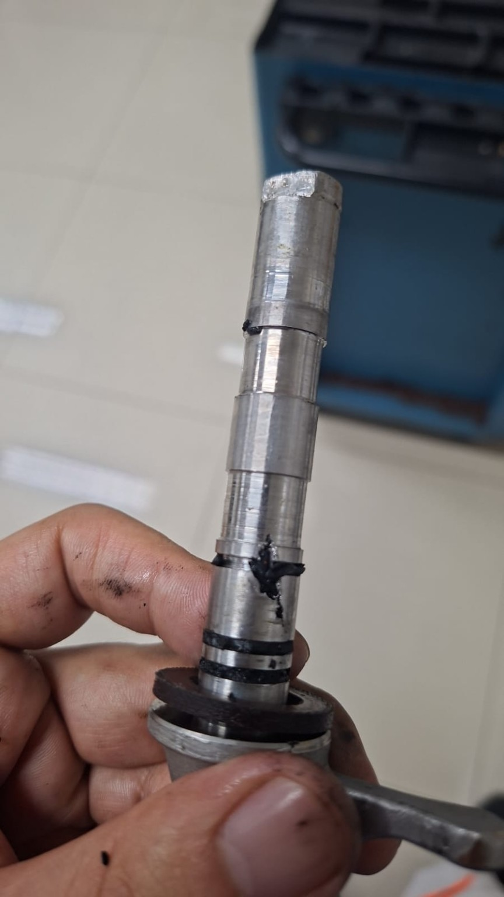
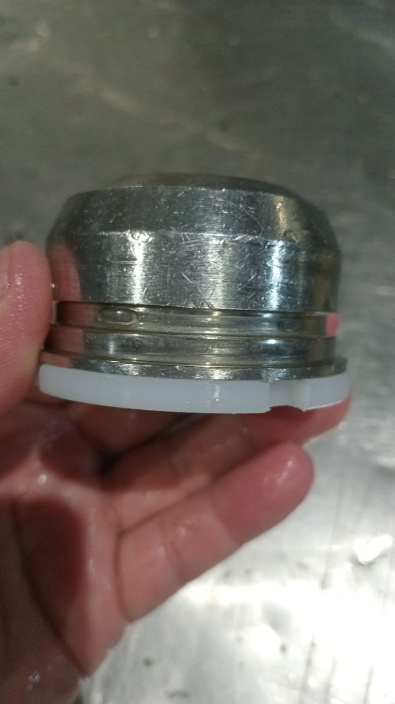
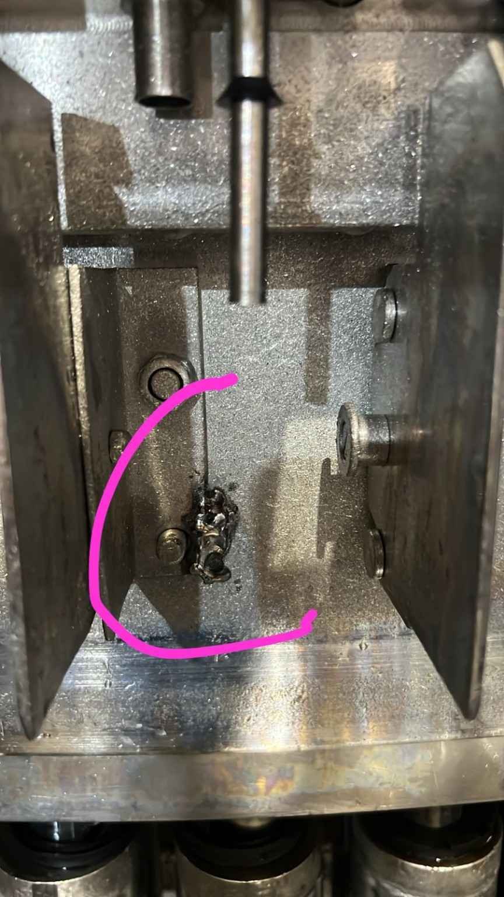
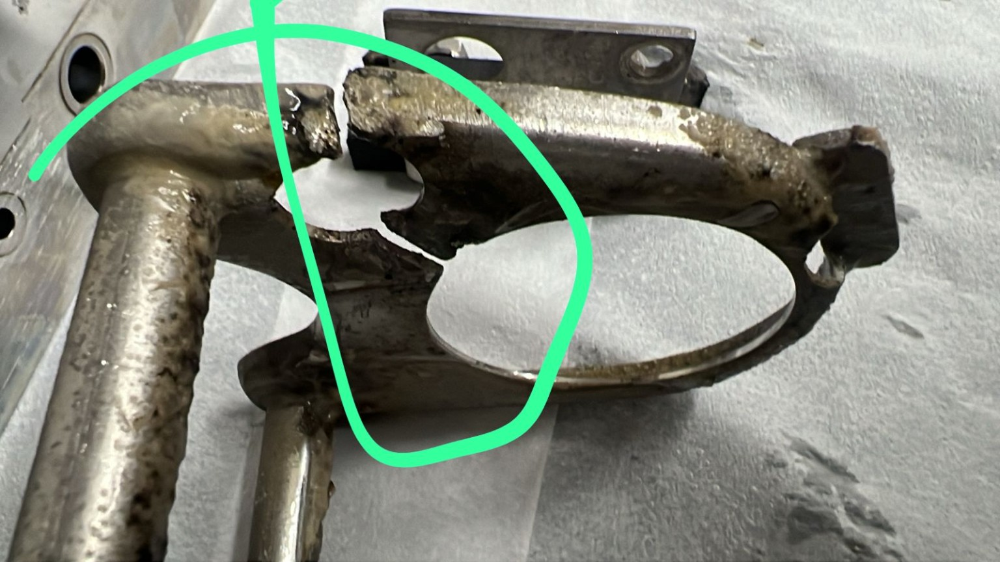
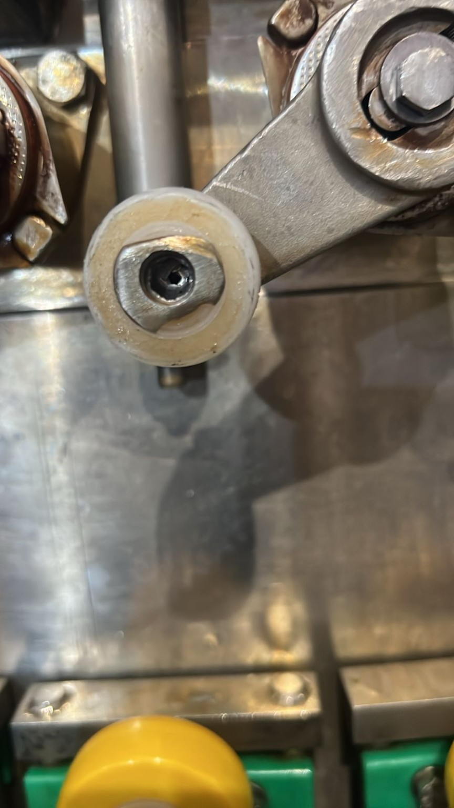
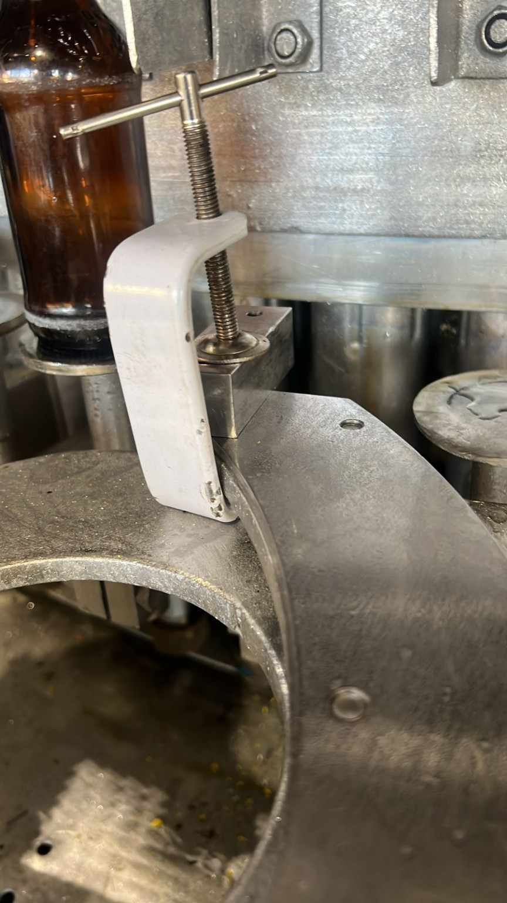
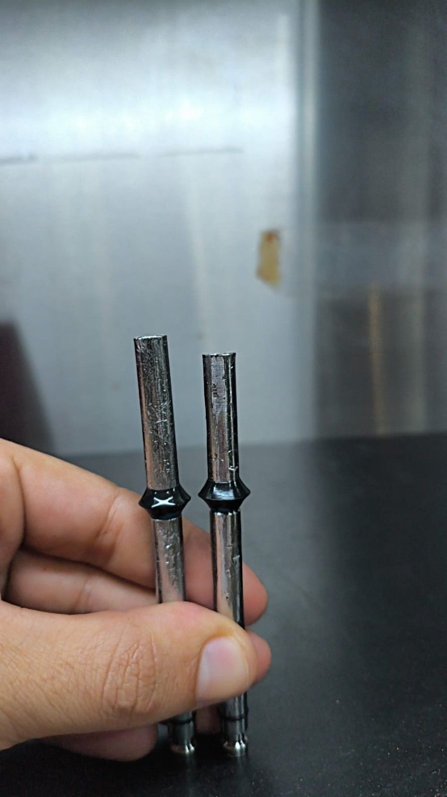
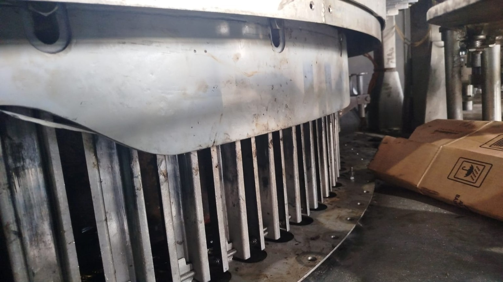
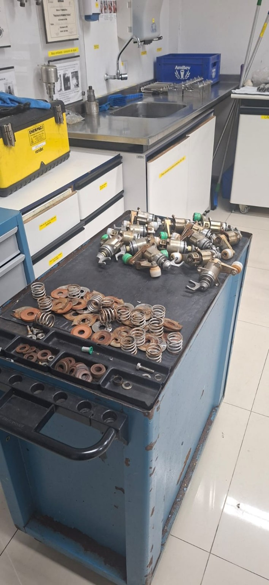
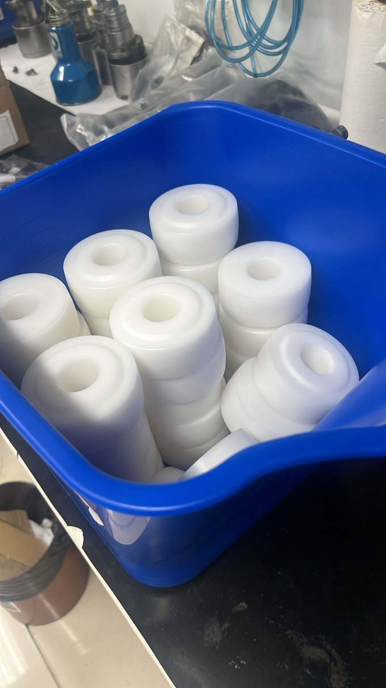
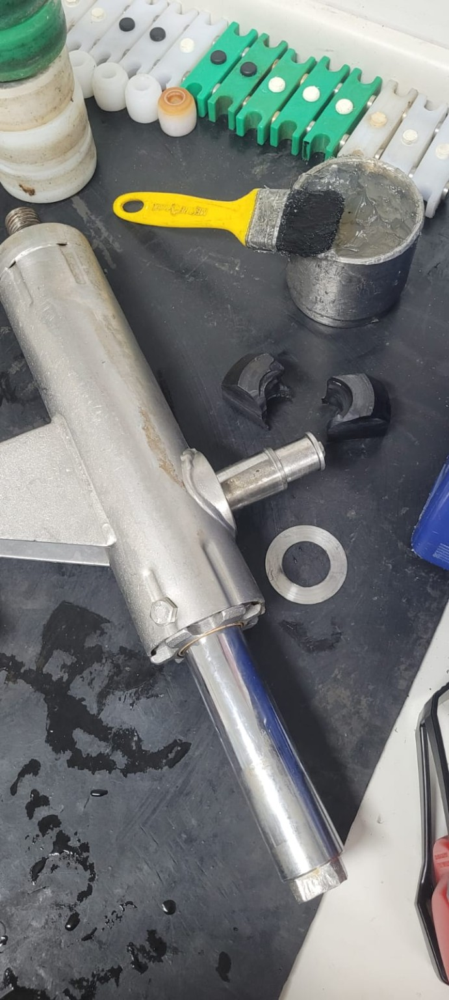
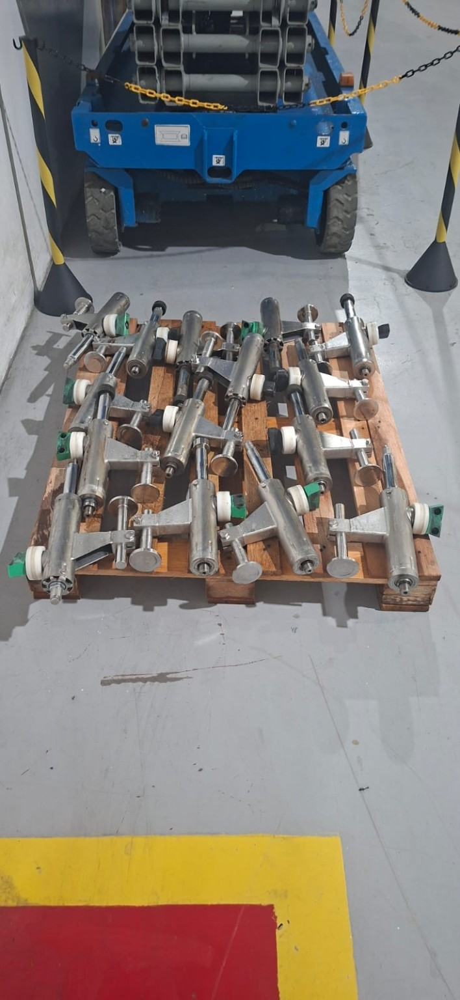
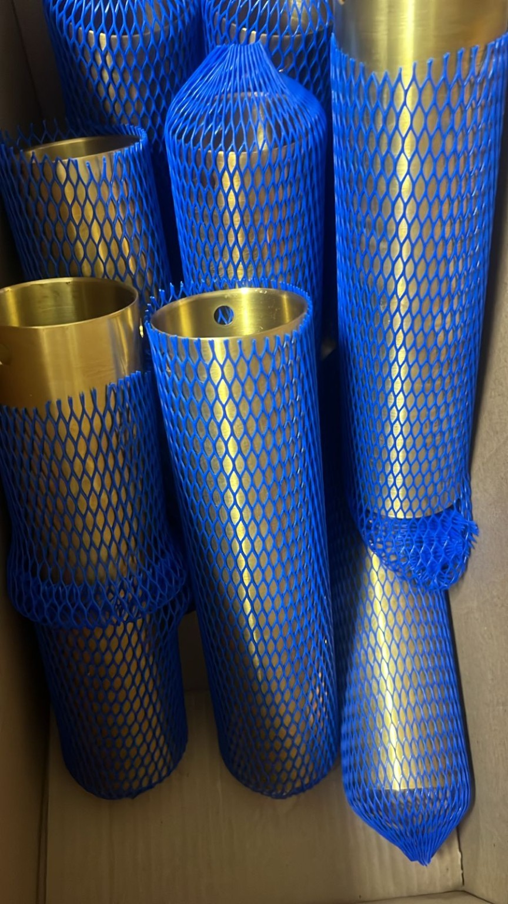
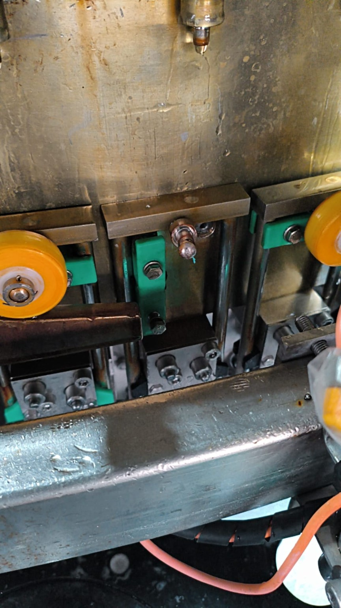
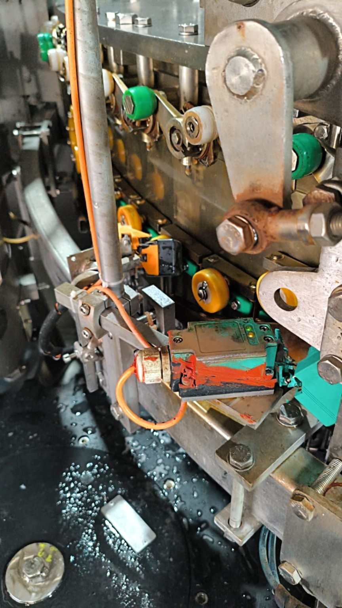
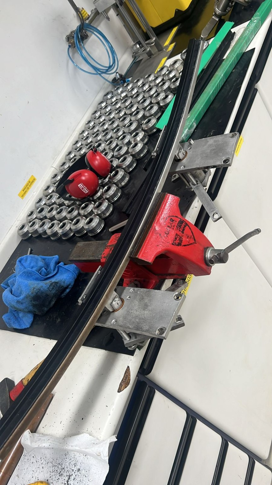